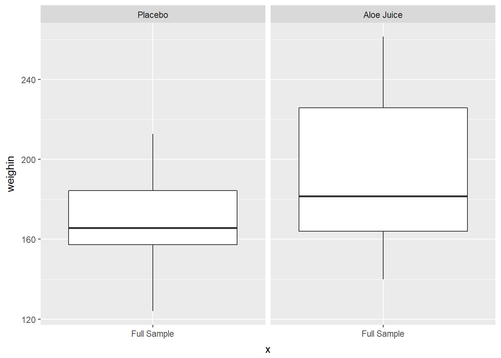

Chapter 3 SUMMARY STATISTICS
Chapter Links
Example: Cancer Experiment
Source of Data
Mid-Michigan Medical Center, Midland, Michigan, 1999: A study of oral condition of cancer patients.
Description of the Study
The data set contains part of the data for a study of oral condition of cancer patients conducted at the Mid-Michigan Medical Center. The oral conditions of the patients were measured and recorded at the initial stage, at the end of the second week, at the end of the fourth week, and at the end of the sixth week. The variables age, initial weight and initial cancer stage of the patients were recorded. Patients were divided into two groups at random: One group received a placebo and the other group received aloe juice treatment.
Sample size n = 25 patients with neck cancer. The treatment is Aloe Juice.
Variables Included
IDpatient identification numbertrttreatment group0placebo1aloe juice
agepatient’s age, in yearsweightinpatient’s weight (pounds) at the initial stagestageinitial cancer stage- coded
1through4
- coded
totalcinoral condition at the initial stagetotalcw2oral condition at the end of week 2totalcw4oral condition at the end of week 4totalcw6oral condition at the end of week 6
Required Packages
library(tidyverse) # Loads several very helpful 'tidy' packages
library(haven) # Read in SPSS datasets
library(furniture) # Nice tables (by our own Tyson Barrett)
library(psych) # Lots of nice tid-bitsData Import
The Cancer dataset is saved in SPSS format, which is evident from the .sav ending on the file name.
The haven package is downloaded as part of the tidyverse set of packages, but is not automatically loaded. It must have its own library() function call (see above). The haven::read_spss() function works very simarly to the readxl::read_excel() function we used last chapter (Wickham and Miller 2017).
- Make sure the dataset is saved in the same folder as this file
- Make sure the that folder is the working directory
cancer_raw <- haven::read_spss("cancer.sav")tibble::glimpse(cancer_raw)Observations: 25
Variables: 9
$ ID <dbl> 1, 5, 6, 9, 11, 15, 21, 26, 31, 35, 39, 41, 45, 2, 12...
$ TRT <dbl> 0, 0, 0, 0, 0, 0, 0, 0, 0, 0, 0, 0, 0, 0, 1, 1, 1, 1,...
$ AGE <dbl> 52, 77, 60, 61, 59, 69, 67, 56, 61, 51, 46, 65, 67, 4...
$ WEIGHIN <dbl> 124.0, 160.0, 136.5, 179.6, 175.8, 167.6, 186.0, 158....
$ STAGE <dbl> 2, 1, 4, 1, 2, 1, 1, 3, 1, 1, 4, 1, 1, 2, 4, 1, 2, 1,...
$ TOTALCIN <dbl> 6, 9, 7, 6, 6, 6, 6, 6, 6, 6, 7, 6, 8, 7, 6, 4, 6, 6,...
$ TOTALCW2 <dbl> 6, 6, 9, 7, 7, 6, 11, 11, 9, 4, 8, 6, 8, 16, 10, 6, 1...
$ TOTALCW4 <dbl> 6, 10, 17, 9, 16, 6, 11, 15, 6, 8, 11, 9, 9, 9, 11, 8...
$ TOTALCW6 <dbl> 7, 9, 19, 3, 13, 11, 10, 15, 8, 7, 11, 6, 10, 10, 9, ...Data Wrangling
cancer_clean <- cancer_raw %>%
dplyr::rename_all(tolower) %>%
dplyr::mutate(id = factor(id)) %>%
dplyr::mutate(trt = factor(trt,
labels = c("Placebo",
"Aloe Juice"))) %>%
dplyr::mutate(stage = factor(stage))
tibble::glimpse(cancer_clean)Observations: 25
Variables: 9
$ id <fct> 1, 5, 6, 9, 11, 15, 21, 26, 31, 35, 39, 41, 45, 2, 12...
$ trt <fct> Placebo, Placebo, Placebo, Placebo, Placebo, Placebo,...
$ age <dbl> 52, 77, 60, 61, 59, 69, 67, 56, 61, 51, 46, 65, 67, 4...
$ weighin <dbl> 124.0, 160.0, 136.5, 179.6, 175.8, 167.6, 186.0, 158....
$ stage <fct> 2, 1, 4, 1, 2, 1, 1, 3, 1, 1, 4, 1, 1, 2, 4, 1, 2, 1,...
$ totalcin <dbl> 6, 9, 7, 6, 6, 6, 6, 6, 6, 6, 7, 6, 8, 7, 6, 4, 6, 6,...
$ totalcw2 <dbl> 6, 6, 9, 7, 7, 6, 11, 11, 9, 4, 8, 6, 8, 16, 10, 6, 1...
$ totalcw4 <dbl> 6, 10, 17, 9, 16, 6, 11, 15, 6, 8, 11, 9, 9, 9, 11, 8...
$ totalcw6 <dbl> 7, 9, 19, 3, 13, 11, 10, 15, 8, 7, 11, 6, 10, 10, 9, ...3.1 Descriptive Statistics
3.1.1 Extensive Set
The describe() function from the psych package returns an extensive listing of basic summary statistics for every variable in a dataset (Revelle 2017).
varsnumber order of the variables in this tablenhow many non-missing values there aremeanthe average or arithmetic meansdthe standard deviationmedianthe 50th percentile or Q2trimmedthe mean after removing the top and bottom 10% of valuesmadmedian absolute deviation (from the median) DO NOT WORRY ABOUT!minthe minimum or lowest valuemaxthe maximum or highest valuerangefull range of values, max - minskewskewness (no SE for skewness given)kurtosiskurtosis (no SE for kurtosis given)sethe standard error for the MEAN, not the skewness or kurtosis
cancer_clean %>%
psych::describe() vars n mean sd median trimmed mad min max range skew
id* 1 25 13.00 7.36 13.0 13.00 8.90 1 25.0 24.0 0.00
trt* 2 25 1.44 0.51 1.0 1.43 0.00 1 2.0 1.0 0.23
age 3 25 59.64 12.93 60.0 59.95 11.86 27 86.0 59.0 -0.31
weighin 4 25 178.28 31.98 172.8 176.57 21.05 124 261.4 137.4 0.73
stage* 5 25 2.88 1.24 2.0 2.81 1.48 1 5.0 4.0 0.73
totalcin 6 25 6.52 1.53 6.0 6.33 0.00 4 12.0 8.0 1.80
totalcw2 7 25 8.28 2.54 8.0 8.10 2.97 4 16.0 12.0 1.01
totalcw4 8 25 10.36 3.47 10.0 10.19 2.97 6 17.0 11.0 0.49
totalcw6 9 23 9.48 3.49 9.0 9.21 2.97 3 19.0 16.0 0.77
kurtosis se
id* -1.34 1.47
trt* -2.02 0.10
age -0.01 2.59
weighin 0.07 6.40
stage* -0.90 0.25
totalcin 4.30 0.31
totalcw2 1.14 0.51
totalcw4 -1.00 0.69
totalcw6 0.53 0.73NOTE The names of categorical variables (factors) are followed by an astrics to indicate that summary statistics should not be evaluated since the variable is not continuous or on an interval scale.
It is better to avoid calculating summary statistics for categorical variables in the first place by first restricting the dataset to only continuous variables using a dplyr::select() step.
Make sure to use a
dplyr::select(var1, var2, ..., var12)step to select only the variables of interest.
cancer_clean %>%
dplyr::select(age, weighin, totalcin, totalcw2, totalcw4, totalcw6) %>%
psych::describe() vars n mean sd median trimmed mad min max range skew
age 1 25 59.64 12.93 60.0 59.95 11.86 27 86.0 59.0 -0.31
weighin 2 25 178.28 31.98 172.8 176.57 21.05 124 261.4 137.4 0.73
totalcin 3 25 6.52 1.53 6.0 6.33 0.00 4 12.0 8.0 1.80
totalcw2 4 25 8.28 2.54 8.0 8.10 2.97 4 16.0 12.0 1.01
totalcw4 5 25 10.36 3.47 10.0 10.19 2.97 6 17.0 11.0 0.49
totalcw6 6 23 9.48 3.49 9.0 9.21 2.97 3 19.0 16.0 0.77
kurtosis se
age -0.01 2.59
weighin 0.07 6.40
totalcin 4.30 0.31
totalcw2 1.14 0.51
totalcw4 -1.00 0.69
totalcw6 0.53 0.733.1.2 Simple Set
The table1() function in the furniture package returns a much smaller listing of summary statistics (Barrett, Brignone, and Laxman 2018).
- Categorical Variables: count (percentage) within each category
- Continuous Variables: mean (standard deviation)
cancer_clean %>%
furniture::table1()
---------------------------------
Mean/Count (SD/%)
n = 25
id
1 1 (4%)
2 1 (4%)
5 1 (4%)
6 1 (4%)
9 1 (4%)
11 1 (4%)
12 1 (4%)
14 1 (4%)
15 1 (4%)
16 1 (4%)
21 1 (4%)
22 1 (4%)
24 1 (4%)
26 1 (4%)
31 1 (4%)
34 1 (4%)
35 1 (4%)
37 1 (4%)
39 1 (4%)
41 1 (4%)
42 1 (4%)
44 1 (4%)
45 1 (4%)
50 1 (4%)
58 1 (4%)
trt
Placebo 14 (56%)
Aloe Juice 11 (44%)
age
59.6 (12.9)
weighin
178.3 (32.0)
stage
0 1 (4%)
1 12 (48%)
2 6 (24%)
3 1 (4%)
4 5 (20%)
totalcin
6.5 (1.5)
totalcw2
8.3 (2.5)
totalcw4
10.4 (3.5)
totalcw6
9.5 (3.5)
---------------------------------The variables desired can also be listed inside the function (selarate with commas).
cancer_clean %>%
furniture::table1(age, weighin, stage, totalcin)
----------------------------
Mean/Count (SD/%)
n = 25
age
59.6 (12.9)
weighin
178.3 (32.0)
stage
0 1 (4%)
1 12 (48%)
2 6 (24%)
3 1 (4%)
4 5 (20%)
totalcin
6.5 (1.5)
----------------------------3.1.3 Simple Set, -by- a Factor
You may use a dplyr::group_by(grouping_var) step before the furniture::table1() step to create summary statistics for different subgroups.
cancer_clean %>%
dplyr::group_by(trt) %>%
furniture::table1(age, weighin, stage, totalcin)
------------------------------------
trt
Placebo Aloe Juice
n = 14 n = 11
age
59.8 (9.0) 59.5 (17.2)
weighin
167.5 (23.0) 192.0 (37.4)
stage
0 0 (0%) 1 (9.1%)
1 8 (57.1%) 4 (36.4%)
2 3 (21.4%) 3 (27.3%)
3 1 (7.1%) 0 (0%)
4 2 (14.3%) 3 (27.3%)
totalcin
6.6 (0.9) 6.5 (2.1)
------------------------------------cancer_clean %>%
dplyr::group_by(stage) %>%
furniture::table1(age, weighin, totalcin, trt)
----------------------------------------------------------------------------
stage
0 1 2 3
n = 1 n = 12 n = 6 n = 1
age
73.0 (NA) 61.7 (15.6) 56.3 (12.0) 56.0 (NA)
weighin
181.5 (NA) 179.4 (24.0) 175.5 (45.7) 158.0 (NA)
totalcin
8.0 (NA) 6.2 (1.3) 6.0 (0.6) 6.0 (NA)
trt
Placebo 0 (0%) 8 (66.7%) 3 (50%) 1 (100%)
Aloe Juice 1 (100%) 4 (33.3%) 3 (50%) 0 (0%)
4
n = 5
56.8 (8.1)
182.3 (42.5)
7.8 (2.4)
2 (40%)
3 (60%)
----------------------------------------------------------------------------3.2 Boxplots
For boxplots, you must specify the variable of interest into the aesthetics as the y variable: ggplot(aes(y = continuous_var)) before adding the geom_boxplot() layer (Wickham 2009).
Reminder: Steps before the
ggplot()are combined with pipes%>%, whereas layers of the plot are combined with the addition symbol+.
3.2.1 Single Box
If you only want to produce a single boxplot, then the aesthetics must include some quoted text as the x variable.
cancer_clean %>%
ggplot(aes(x = "Full Data Set",
y = weighin)) +
geom_boxplot()
3.2.2 Single Box -for- a Subset
One Requirement
Where as the dplyr::select() function specifies which VARIABLES to reduce down to, the dplyr::filter() function specifies which ROWS or PARTICIPANTS to reduce down to.
When using a
dplyr::filter()step, make sure to change thex = "text", too.
cancer_clean %>%
dplyr::filter(weighin < 172) %>%
ggplot(aes(x = "Weigh At Baseline < 172",
y = weighin)) +
geom_boxplot()
Two Requirements
When testing for a match to a value (for equality) use == instead of = in the dplyr::filter() step.
Use the & symbol to require multiple conditions for the subset, but only include one quoted text phrase for x.
cancer_clean %>%
dplyr::filter(weighin >= 150 & trt == "Placebo") %>%
ggplot(aes(x = "Placebo and at least 150 Pounds",
y = weighin)) +
geom_boxplot()A Requirement Specified with a List
A helpful symbol-set is %in%, which tests if the thing before it is included in the list of elements that comes after it.
cancer_clean %>%
dplyr::filter(trt == "Aloe Juice" & stage %in% c(2, 3, 4)) %>%
ggplot(aes(x = "On Aloe Juice and Stage 2-4",
y = weighin)) +
geom_boxplot()
3.2.3 Multiple Boxes -by- a Factor
There are three ways to included a categorical variable to break the sample into groups. You may specify the factor with:
fillthe variable is denoted with different colors filling the boxesxthe horizontal axis is marked for all levelsfacet_grid()a panel is create for each level
Use fill = var_name
cancer_clean %>%
ggplot(aes(x = "Full Sample",
y = weighin,
fill = trt)) +
geom_boxplot()Use x = var_name
cancer_clean %>%
ggplot(aes(x = trt,
y = weighin)) +
geom_boxplot()
Use facet_grid(. ~ var_name)
cancer_clean %>%
ggplot(aes(x = "Full Sample",
y = weighin)) +
geom_boxplot() +
facet_grid(. ~ trt)
3.2.4 Multiple Boxes -by- 2 Factors
You may combine any of the three previous specification, one per categorical (factor) variable.
3.2.4.1 Use fill = var_name_1 and x = var_name_2
cancer_clean %>%
ggplot(aes(x = stage,
y = weighin,
fill = trt)) +
geom_boxplot()
3.2.4.2 Use x = var_name_1 and facet_grid(. ~ var_name_2)
cancer_clean %>%
ggplot(aes(x = trt,
y = weighin)) +
geom_boxplot() +
facet_grid(. ~ stage)
3.2.4.3 Use fill = var_name_1 and facet_grid(. ~ var_name_2)
cancer_clean %>%
ggplot(aes(x = "Full Sample",
y = weighin,
fill = trt)) +
geom_boxplot() +
facet_grid(. ~ stage)3.2.5 Multiple Boxes -for- a Subset AND -by- 2 Factors
The layers maybe combined to create more complicated plots.
Here is a plot for only participants who were in stage 1, 2, or 4 (n > 1 per stage), and compares the final oral condition for each stage between participants receiving the Aloe treatment vs. the placebo.
cancer_clean %>%
dplyr::filter(stage %in% c("1", "2", "4")) %>%
ggplot(aes(x = stage,
y = totalcw6,
fill = trt)) +
geom_boxplot() 3.2.6 Multiple Boxes -for- Repeated Measurements
The ordinal data is in what is called “WIDE” format, with the repeated measurements as separate variables, sitting side-by-side. Each participant’s data is contained in a single line (25 lines here).
To sort a dataset, use the
dplyr::arrange()function and include the variable or variables you wish to sort by in the parentheses.
cancer_clean %>%
dplyr::arrange(id) %>%
dplyr::select(id, totalcin, totalcw2, totalcw4, totalcw6)# A tibble: 25 x 5
id totalcin totalcw2 totalcw4 totalcw6
<fct> <dbl> <dbl> <dbl> <dbl>
1 1 6.00 6.00 6.00 7.00
2 2 7.00 16.0 9.00 10.0
3 5 9.00 6.00 10.0 9.00
4 6 7.00 9.00 17.0 19.0
5 9 6.00 7.00 9.00 3.00
6 11 6.00 7.00 16.0 13.0
7 12 6.00 10.0 11.0 9.00
8 14 4.00 6.00 8.00 7.00
9 15 6.00 6.00 6.00 11.0
10 16 6.00 11.0 11.0 14.0
# ... with 15 more rowsSome data manipulations is needed to “stack” the repeated measurement variables (baseline, week 2, week 4, week 6) into a single variable we will call value. We also need another new variable that denotes the measurement time, which we will call time. The resulting dataset is said to be in “LONG” format. Now there will be one line for each observation time on each participant (4 x 25 = 100 lines here).
This is done with with the tidyr::gather(key = "new_time_var", value = "new_value_var", old_var_1, old_var_2, ...) function.
Ignore the message that says “attributes are not identical across measure variables; they will be dropped”.
cancer_clean %>%
tidyr::gather(key = "time",
value = "value",
totalcin, totalcw2, totalcw4, totalcw6) %>%
dplyr::arrange(id, time) %>%
dplyr::select(id, time, value)# A tibble: 100 x 3
id time value
<fct> <chr> <dbl>
1 1 totalcin 6.00
2 1 totalcw2 6.00
3 1 totalcw4 6.00
4 1 totalcw6 7.00
5 2 totalcin 7.00
6 2 totalcw2 16.0
7 2 totalcw4 9.00
8 2 totalcw6 10.0
9 5 totalcin 9.00
10 5 totalcw2 6.00
# ... with 90 more rowsOnce the data is in this format, you can create box plots for each time point.
Ignore the additional message that says “Removed 2 rows containing non-finite values (stat_boxplot)”. This is just alerting you to the fact that two people are missing their week 6 oral condiditon values.
cancer_clean %>%
tidyr::gather(key = "time",
value = "value",
totalcin, totalcw2, totalcw4, totalcw6) %>%
ggplot(aes(x = time,
y = value)) +
geom_boxplot()
Multiple Boxes -for- Repeated Measurements AND -by- a Factor
cancer_clean %>%
tidyr::gather(key = "time",
value = "value",
totalcin, totalcw2, totalcw4, totalcw6) %>%
ggplot(aes(x = time,
y = value,
fill = trt)) +
geom_boxplot()
cancer_clean %>%
tidyr::gather(key = "time",
value = "value",
totalcin, totalcw2, totalcw4, totalcw6) %>%
ggplot(aes(x = time,
y = value)) +
geom_boxplot() +
facet_grid(. ~ trt)